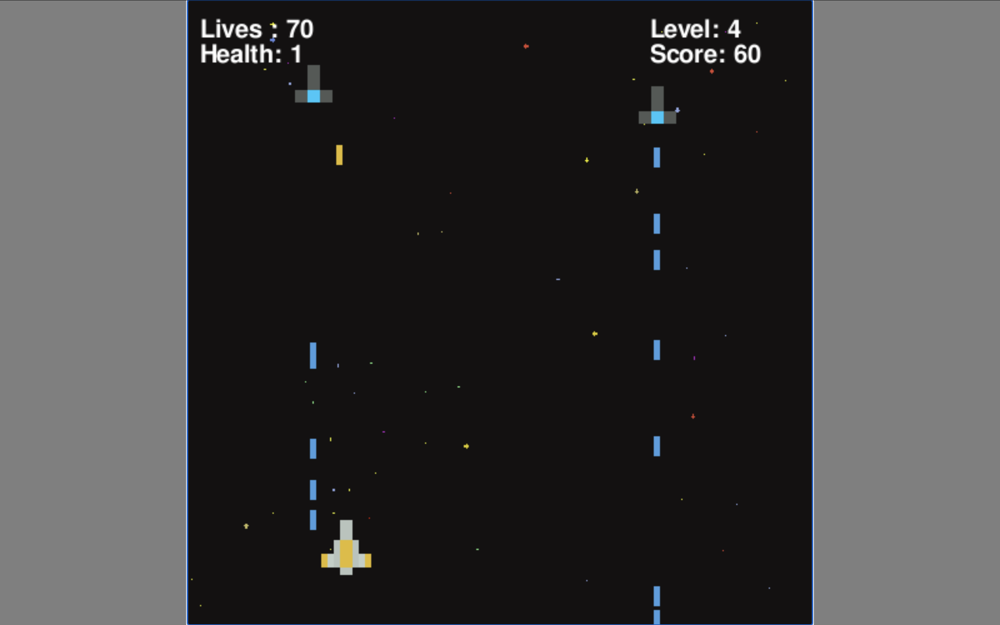

Georgia Tech Solar Racing - Power Train Engineer
August 2025 – Present
Co-designed an updated breakout board to aid the testing of high-volume powertrain connectors while prioritizing reliable communication amongst various other vehicle subsystems. Using KiCad, my partner and I created the schematics, the PCB layouts, and manufacturing files. The board supports and integrates various connectors, including UART, RJ45, Molex, and more, with a configurable CAN bus termination and test points.
Currently, I am working on redesigning our Motorsense board, which collects position, temperature, and CAN data from the Wavesculptors to the motors. I am updating its KiCad schematic and layout, verifying component availability, and preparing it for fabrication. Alongside this, I’ve also been working with team leads to work on the harnessing of our motors.
Georgia Tech Vertically Integrated Projects - AquaBots
January 2025 – Present
As part of the Prince William Sound Salmon Computer Vision Team at Georgia Tech's Aquabot Vertically Integrated Project, I've been researching and implementing EfficientNetV2 convolutional neural networks (CNNs) to improve the accuracy and training efficiency of a program for tracking salmon by using fish-scale images.
Recently, my work has focused on consolidating existing Jupyter notebooks, refining datasets, and integrating depth-augmented ZED footage for model training and testing. I’ve explored EfficientNet-B1 and EfficientNetV2-M architectures, emphasizing the importance of faster training and improved interpretability. To address the subjectivity of fish-scale age labeling, I’m also investigating soft labeling and fuzzy logic approaches to better model uncertainty.
Georgia Tech IOS Club - ARchitect
January 2025 – May 2025
At Georgia Tech’s iOS Club, I worked on ARchitect, a social media and interior design app that blends augmented reality with a Pinterest and Instagram-like feed. On the social media subteam, I develop dynamic 3D visualizations with real-time object manipulation and product details using RealityKit and SwiftUI, ensuring smooth transitions between AR views and the feed. I collaborated closely with UI/UX designers to align AR interactions with the app’s visual aesthetic, creating a cohesive and engaging user experience.
This project strengthened both my technical skills and my ability to work across teams. At the end of the semester, our app was showcased at the iOS Club’s biannual demo event, where ARchitect won the Popular App Award by public vote.
Remote Software Development Intern at eBest Mobile
June - August 2025
As a Remote Software Intern at eBest Mobile, a mobile technology company specializing in sales force automation and retail execution systems for FMCG and CPG brands, in Bengaluru, I worked with a group of senior software developers. I built an FMCG-focused mobile application using Ionic and Angular, developing core features such as user authentication, a product catalog, a shopping cart, and order history pages. I also implemented responsive UI components and navigation to ensure a smooth, consistent experience across devices. Through this role, I gained hands-on experience with full mobile app development workflows, from design and implementation to testing and deployment.
Software Engineering Intern at Line Vietnam
June 2023
At Line Vietnam in Ho Chi Minh City, I interned at the development center responsible for maintaining and creating applications on the Line core platform. Working alongside three other interns, I reviewed, debugged, and optimized Java-based projects to meet company standards and improve functionality. I gained hands-on experience with the Scrum framework, strengthening collaboration and understanding of agile development workflows. Throughout the internship, I also participated in backend team meetings, contributing insights while deepening my technical knowledge of production-level software systems.
Apprentice at VNG Vietnam
March - May 2023
At VNG Vietnam, I completed the VNG Junior Development Program as an apprentice under the mentorship of a Senior Software Engineer at ZingPlay Game Studios. During this program, I developed foundational backend game development skills using Python, with an emphasis on scalability, performance, and clean software design. To apply what I learned, I designed and built a Space Shooter game, demonstrating my understanding of core game mechanics, coding principles, and backend architecture.

F1 Fantasy Analytics System
March 2025 - Present
The F1 Fantasy Grader is a data-driven analytics system I built to evaluate and score user-created Formula 1 fantasy teams using historical race data. Leveraging five years of race, driver, and constructor statistics, the system cleans and processes raw datasets, engineers performance features, and applies algorithmic scoring logic to assess team quality and consistency. Results are stored in a relational MySQL database and presented through an interactive Streamlit dashboard, allowing users to visualize rankings, scoring breakdowns, and comparative performance trends in an intuitive, user-facing interface.
Space Shooter Game
March - May 2023
Space Shooter is a browser-based arcade game I built using Python and Pygame, featuring real-time movement, shooting mechanics, enemy waves, and level-based difficulty progression. The game uses pixel-perfect collision detection, sprite-based rendering, and integrated sound effects to create a responsive gameplay experience, and was packaged for the web using WebAssembly tooling (pygbag) so it can run directly in the browser without any installation.
